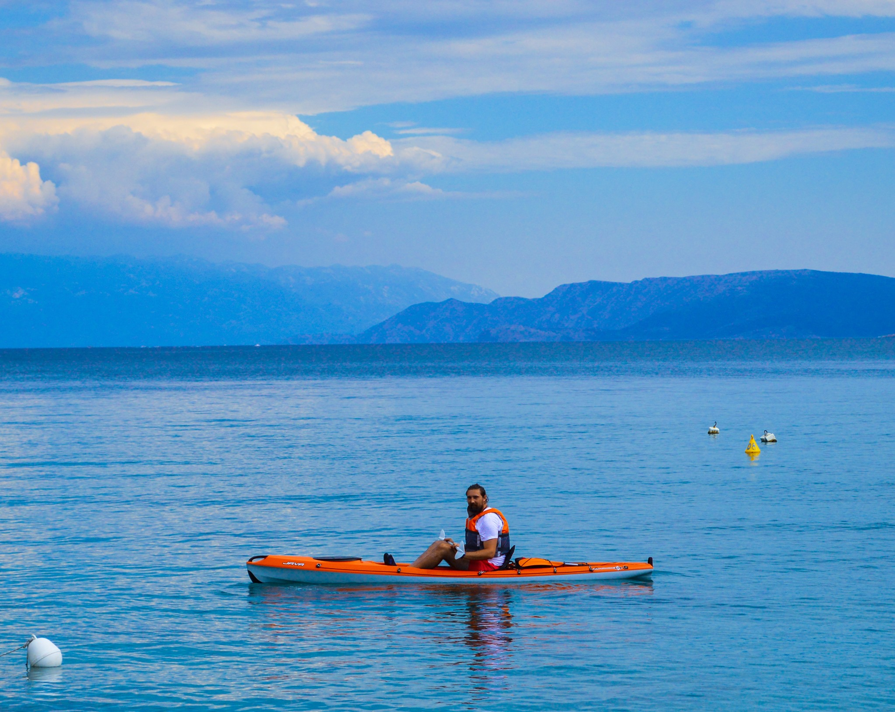

If you want to make the most out of your vacation, then try experiencing
the Mediterranean by joining me, a certified experienced kayak guide, on a
kayaking adventure on our clear blue sea where you will hear interesting
local stories and history, visit hidden beaches and enjoy a dip in the sea
or snorkeling.

You can choose from three routes, designed carefully to accommodate every
type of traveler and fitness level:
1) The panoramic tour: We will set out from Kačjak peninsula and kayak our
way to the center of Crikvenica which will allow us to see most of the Crikvenica panorama. This tour is perfect for first timers and requires a medium fitness level. The tour finishes at Crikvenica’s small port Lučica and, if needed the transport back to the starting location is provided.
Distance: about 7 km
Duration: 2.5 hours
2) Kačjak peninsula tour: a tour around Kačjak peninsula with bits of
interesting local history and snorkeling included. Perfect for a medium
fitness level and recharging.
Distance: around 5 km
Duration: 3 hours
3) The adventurous route: Starting from Jadranovo, we will kayak across
the sea to Maltempo lighthouse on Krk island with a stop for a short swimm,
then continue alongside Krk to another lighthouse where we will cross back
to a small cove in Jadranovo Lokvišća and finish our tour.
Distance: 8km
Duration: 3.5 hours
If you need more info, contact me!
I'm Kresimir and I am a professional basketball coach (bacc. cin.)
and a certified kayak guide. Sport is my passion, especially kayaking.
At sea I can relax and enjoy the views of my small town on the Adriatic.
That's why I became a certified kayak guide because I want to share my passion
for the sea and my town with others! I love traveling and meeting new people,
and my wife and I are also experienced Airbnb hosts - we have our own rental
so we really do have experience with tourism and we love to host!